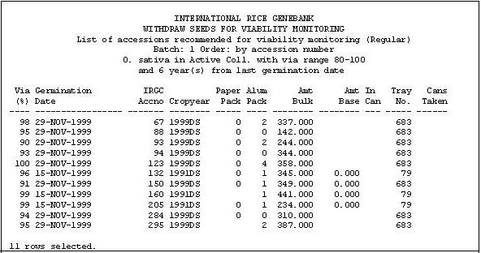
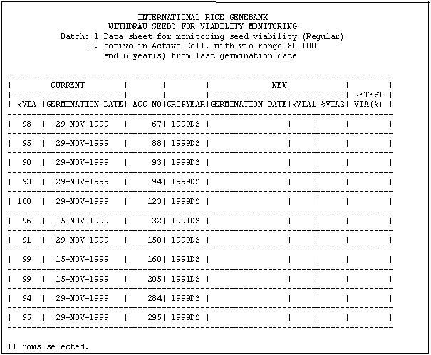

TDM Genetic Resources Information Management System
From ICISWiki
Contents |
GENETIC RESOURCES INFORMATION MANAGEMENT SYSTEM (GRIMS)
Introduction
The Genetics Resources Center (GRC) of the International Rice Research Institute IRRI maintains a partnership with national programs and regional and international organizations worldwide. GRC endeavors to ensure the long-term preservation of rice biodiversity and to add value to this biodiversity through research. It also delivers germplasm and related information to users, including public and private sector organizations, non-governmental organizations (NGOs), individual scientists, and farmers, in a timely and safe manner.
The objective of the center is to collect, conserve, characterize, and ensure the continued availability and exchange of rice genetic resources, and eco-geographic and agronomic data related to the germplasm in the International Rice Genebank Collection, in accordance with international conventions, agreements, and policies. It also aims to enhance the capacity of national agricultural research systems (NARS) to conserve, to utilize and to improve rice germplasm, to broaden the genetic diversity and the genetic base of rice varieties used by farmers.
In 2002, the Consultative Group on International Agricultural Research (CGIAR) received a grant from the World Bank to upgrade the genebanks of its affiliate institutions. CGIAR is a strategic alliance of countries, international and regional organizations, and private foundations supporting 15 international agricultural Centers that work with national agricultural research systems and civil society organizations including the private sector.
The upgrade project includes improvement of the International Rice Genebank Information System (IRGCIS) which aims to increase interoperability with other genebanks across partner institutions. The said upgrade also aims to improve work efficiency within IRGC through more sophisticated data management. Moreover, the new system to be developed is expected to eradicate redundant activities performed by the current IRGCIS developed using Forms Developer 2000 v 4.05 in early 1990's.
The International Crop Information System (ICIS) is identified as the most appropriate technology to achieve the above purposes. ICIS is recognized as a technology which specializes on genetic management data. Hence, through ICIS, it is aimed to integrate the IRGC to other genebanks and to other divisions within IRRI. Additionally, IRGCIS to ICIS migration aims to handle IRGC management data more efficiently so as to benefit the Genebank, and to contribute to the global challenge of unlocking the diversity of rice for improving the living of resource poor.
GRC and IRGCIS Background
GRC keeps the widest variety of rice worldwide known as the International Rice Genebank Collection (IRGC). IRGCIS performs a key role to achieve the center’s objective. It helps the Genebank staffs to systematically perform their day-to-day activities and operations. It performs all germplasm associated operations. Specifically, IRGCIS facilitates faster execution of the following:
* Conservation and management of acquired samples
* Seed multiplication/ rejuvenation
* Seed characterization
* Registered seed management and inventory
* Seed distribution
Use Cases
Seed Acquisition
IRGCIS acquisition module involves the following processes: the receipt and registration of seeds, initial seed increase, inclusion of the seeds to the collection, and the designation of seeds—Food and Agriculture Organization (FAO) / Multi-lateral System (MLS). The donor information and all passport information registration is be handled by this module. Additionally, inventory of the remnants, seed file presence and amount of materials available for planting from both successful and unsuccessful seed increase is done by this module.
- Registration of donor information
- Registration of incoming batch sample
- Integration with Seed Health Unit
- Generation of positive germplasm identifiers (GID) shall be initiated by the Seed Health Unit (SHU) including the monitoring and registration of all germplasms that comes in/out of the institute.
- Registration of incoming passport
- Checking for possible duplication of incoming samples against the collection
- Edit-distance algorithm
- Soundex algorithm
- ICIS GMSearch
- Entering of seed information based on the Genebank Staffs observation
- Selection and planting newly acquired samples for initial seed increase
- Monitoring of planted materials
- Seed processing information of harvested samples
- Assignment of IRGC accession number
- Printing of labels
- Report Generations
- Letter to donor
- Report summary
- Prooflists
- Query on planted materials
- Species reidentification
- Transfering of data to ICIS Central Database
- Designation of seeds to FAO/MLS
Viability Monitoring
This use case refers to the active collection only. Part of the active collection is packaged in aluminum cans which is the old way of packaging seeds stored in medium-cold room. However, a new way of packaging in aluminum foil bags is introduced.. All the germplasm have to be tested for viability routinely every 5 years or whenever the viability goes below 85% of the first viability result. Hence, viability monitoring is a continuous activity and never stops even if the analysis of viability data starts next year 2006.
Viability testing will be combined with seed selection, re-packaging, barcode label printing and inventory adjustment. Weighing of 2 10-grams paper packets is done whenever the record shows that the current number of paper pre-pack Is equivalent to 0.
It is possible that the seeds selected for viability is a mixed list of those packed using aluminum cans and of those already in the aluminum foil.
Create a batch(list) of germplasm for viability monitoring
Based on the criteria set by the Genebank Manager (i.e. germination date, current viability, species type, and storage type), a batch of seed for viability monitoring is created a week prior to the completion of the preceding batch. The seed list is printed which is ordered by accession number, germination date, and storage type to facilitate faster locating of the actual seed samples inside the store room. Example of the seed list is shown below.
Figure 1. IRGC Prooflist for Viability Monitoring 
Figure 2 shows the datasheets used by GRC to record the viability result.
Figure 2. IRGC Datasheet for recording Viability 
Retrieve material for viability monitoring
Under the direct supervision of the GBManager, a genebank staff gets the material physically from the cold room. If the material to be taken out is packed using the aluminum cans (1 accession may have several aluminum cans in active collection), only one can is taken out and the remaining cans are left.
Another group of Genebank technicians does the opening of cans and seed counting for germination testing (2 packets containing 100 grains each or 5-10 grams ). The cans are closed provisionally and returned to the store room on its temporary location. At the same time, if the current number of prepared paper packet (pre-pack) of an accession is equivalent to 0 an adjustment and preparation of 2 paper packets (10 grams each) is done after getting and passing the germination result.
The taking of aluminum cans is done daily. However, the cans shall remain in the room first for a day to equilibrate the seeds temperature inside the cans. The printing of the list of germplasm accessions can be done by the range of accession. The same list is used for viability testing. Note that the list contains both canned and bulked samples in aluminum foil.
Test for viability
Viability testing is also done on the daily basis. Seeds come from the batch prepared in item # 1 and are prepared by different team as explained in item #2. They are monitored also based on the order that appears to the data sheet. Hence, a batch of seeds subject for viability monitoring may have different germination testing dates. (Germination test date is defined as the beginning of the test.)
Another group of Genebank technicians handles the actual germination testing. Table 2 shows the datasheet that is used for recording the result (the 2 replicates of germination result are recorded). After 14 (+/-) days, germination result is ready. Germination test is done independently on two samples of 100 seed each. The datasheet is handed to the Genebank manager and she recommends the action that must be performed to the seeds. However, the system can also recommend action if the result of the two replicates exceeds the allowable difference, then, a re-test is made.
Viability Difference Table
| Viability Average (of 2 replicates) | Maximum Allowable Difference |
|---|---|
| 99 | 4 |
| 98 | 5 |
| 97 | 6 |
| 96 | 6 |
| 95 | 7 |
| 94 | 8 |
| 93 | 8 |
| 92 | 9 |
| 91 | 9 |
| 90 | 9 |
| 89 | 10 |
| 88 | 10 |
| 87 | 11 |
| 86 | 11 |
| 85 | 11 |
| 84 | 11 |
| 83 | 12 |
| 82 | 12 |
| 81 | 12 |
| 80 | 13 |
| 79 | 13 |
| 78 | 13 |
| 77 | 13 |
| 76 | 13 |
| 75 | 14 |
| 74 | 14 |
| 73 | 14 |
| 72 | 14 |
| 71 | 14 |
| 70 | 14 |
| 69 | 14 |
| 68 | 15 |
| 67 | 15 |
| 66 | 15 |
| 65 | 15 |
| 64 | 15 |
| 63 | 15 |
| 62 | 15 |
| 61 | 15 |
| 60 | 15 |
| 59 | 15 |
| 58 | 15 |
| 57 | 15 |
| 56 | 16 |
| 55 | 16 |
| 54 | 16 |
| 53 | 16 |
| 52 | 16 |
| 51 | 16 |
| 50 | 16 |
| 49 | 16 |
| 48 | 16 |
| 47 | 16 |
| 46 | 16 |
| 45 | 16 |
| 44 | 15 |
| 43 | 15 |
| 42 | 15 |
| 41 | 15 |
| 40 | 15 |
| 39 | 15 |
| 38 | 15 |
| 37 | 15 |
| 36 | 15 |
| 35 | 15 |
| 34 | 15 |
| 33 | 15 |
| 32 | 14 |
| 31 | 14 |
| 30 | 14 |
| 29 | 14 |
| 28 | 14 |
| 27 | 14 |
| 26 | 14 |
| 25 | 13 |
| 24 | 13 |
| 23 | 13 |
| 22 | 13 |
| 21 | 13 |
| 20 | 12 |
| 19 | 12 |
| 18 | 12 |
| 17 | 11 |
| 16 | 11 |
| 15 | 11 |
| 14 | 11 |
| 13 | 10 |
| 12 | 10 |
| 11 | 9 |
| 10 | 9 |
| 9 | 9 |
| 8 | 8 |
| 7 | 8 |
| 6 | 7 |
| 5 | 6 |
| 4 | 6 |
| 3 | 5 |
| 2 | 4 |
| 100 | 1 |
Printing of labels
If the seed passed the germination test and the repeat test, label printing must be executed. Germplasm with viability below the threshold remains in the store, but is marked for replacement. Labels need to be printed at this stage so that the bags can be labeled before the re-packaging starts.
At this stage of label printing, the preparation of pre-packs commences.
Label
Barcode[Lot ID]
Accession #
Germplasm variety name
[Donor Code/ Foreign Accession Number]
Crop season
FAO-DESGINATION
Re-package, weigh and pre-pack
After the labels have been printed, updating the data and the actual weighing are done. Getting of the aluminum cans from the actual collection and of the remaining cans from the original location follows. Note that all cans have to be taken out of the store, (also the existing pre-packs], seed cleaning, re-packaging, weighing the bulk packs.
This is the critical stage where we have to interface barcode scanner, balance, and computer. A list with the appropriate inventory transactions has to be created at this stage. Proof reading and the actual updating of the data in batch to the master file is done by the Genebank manager (=committing to inventory system).
Data Dictionary
Seed acquistion tables not defined within ICIS database model.
TBL_AVAILABLE_PLMAT
TBL_BATCH
Stores the donor information and the information relevant to a batch of seed samples
| COLUMN NAME | DATA TYPE | DESCRIPTION | DEFAULT_VALUE | EXAMPLE |
|---|---|---|---|---|
| LISTID | LONGINT | Foreign Key to ICIS LISTNMS table
GRC Incoming batches are stored in the ICIS LISTNMS table as LISTNAME. | NOT NULL | 1 |
| ACQ_DATE | LONG | Date when a batch of samples was received from the seed donor | 0 | 20050101 |
| LPERSONID | LONG | Sender code using ICIS identifier | 0 | 1 |
| INSTITID | LONG | Sender's institute | 0 | 1 |
| CNTRYID | LONG | Sender’s country | 0 | 1 |
| TOT_RECEIVED | INTEGER | Total samples received (including empty seed packets) | NOT NULL | 1 |
| MISSION_CODE | INTEGER | References TBL_MISSION | 1 | |
| SHU | VARCHAR(10) | Seed Health Unit testing number | 1 | |
| REMARKS | VARCHAR(255) | Comment/ remark/ observation | HANDCARRIED BY BAO RONG LU |
TBL_DELICATE_ACTION
This table stores the plot no of the seed that is replanted.
| COLUMN NAME | DATA TYPE | DESCRIPTION | DEFAULT_VALUE | EXAMPLE |
|---|---|---|---|---|
| PLOTNO | LONGINT | NOT NULL | ||
| CROPYEAR | VARCHAR2(6) | |||
| DELICATE_STATUS | VARCHAR2(3) |
TBL_CHAR_SAMPLES
A warehouse table that is used for selecting seeds for characterization.
| COLUMN NAME | DATA TYPE | DESCRIPTION | DEFAULT_VALUE | EXAMPLE |
|---|---|---|---|---|
| LISTID | LONGINT | NOT NULL | ||
| SAMPLE_ID | VARCHAR2(6) | |||
| STATUS | CHAR(1) | Indicates the status or the stage of selection process
(e.g. * - Initial selection, R- Requested, D- deleted, F- Finalized) | * | * |
| CROPYEAR | VARCHAR(6) | Season when the sample is selected for planting | 2005WS |
TBL_GENERATION
This table connects the IRGC accession number to ICIS GID.
| COLUMN NAME | DATA TYPE | DESCRIPTION | DEFAULT_VALUE | EXAMPLE |
|---|---|---|---|---|
| GENERATION | INTEGER | Gives quick information regarding the time(s) a specific accession has been reguvenated before acquiring the corresponding GID | NOT NULL | |
| LGID | LONGINT | Local germplasm identification number, negative(-) integer | ||
| GID | LONGINT | Central ICIS germplasm identification number | ||
| ACCNO | LONGINT | Accession numebr | ||
| CROPYEAR | VARCHAR(6) | Season when the accession was harvested |
TBL_HOLDING_BULK
TBL_MISSION
TBL_PASSPORT1
TBL_PASSPORT2
TBL_SAMPLES_PLANTED
TBL_SEED_INFO
Stores the initial seed information observed by the genebank curator on the seed samples
| COLUMN NAME | DATA TYPE | DESCRIPTION | DEFAULT_VALUE | EXAMPLE |
|---|---|---|---|---|
| FIELD | DATATYPE | DESCRIPTION | DEFAULT VALUE | EXAMPLE |
| GID | LONG | Germplasm Identification Number | NOT NULL | |
| INCOM_SEED_STAT | VARCHAR(3) | Status of incoming sample
Possible reasons : milled, unfilled grains, empty envelope, not rice, decayed, sprouted, not promising line, etc.
| NOT NULL | DUP, EXC, MIX, REP |
| INCOM_SEED_VIAB | VARCHAR(3) | Viability status of incoming samples rescued:
| NOT NULL | OK, NV, W |
| REMNANT_STATUS | VARCHAR2(255) | Status of remnant seeds
| NOT NULL | IR, NR |
TBL_SEED_VIAB TABLE
Records all information of the seed viability data
| COLUMN NAME | DATA TYPE | DESCRIPTION | DEFAULT_VALUE | EXAMPLE |
|---|---|---|---|---|
| GID | LONG | Germplasm Identification Number | NOT NULL | -323123 |
| GERM_DATE | LONG | Germination date | NOT NULL | 20060101 |
| VIAB | FLOAT | Average of 2 viability result | NOT NULL | 99 |
| VIAB_DIFF | INTEGER | Rounded value (to the nearest ones) of the vaibility result | NOT NULL | 1 |
| STOTYPE | VARCHAR2(1) | Storage type | NOT NULL | A- ACTIVE B- BASE |